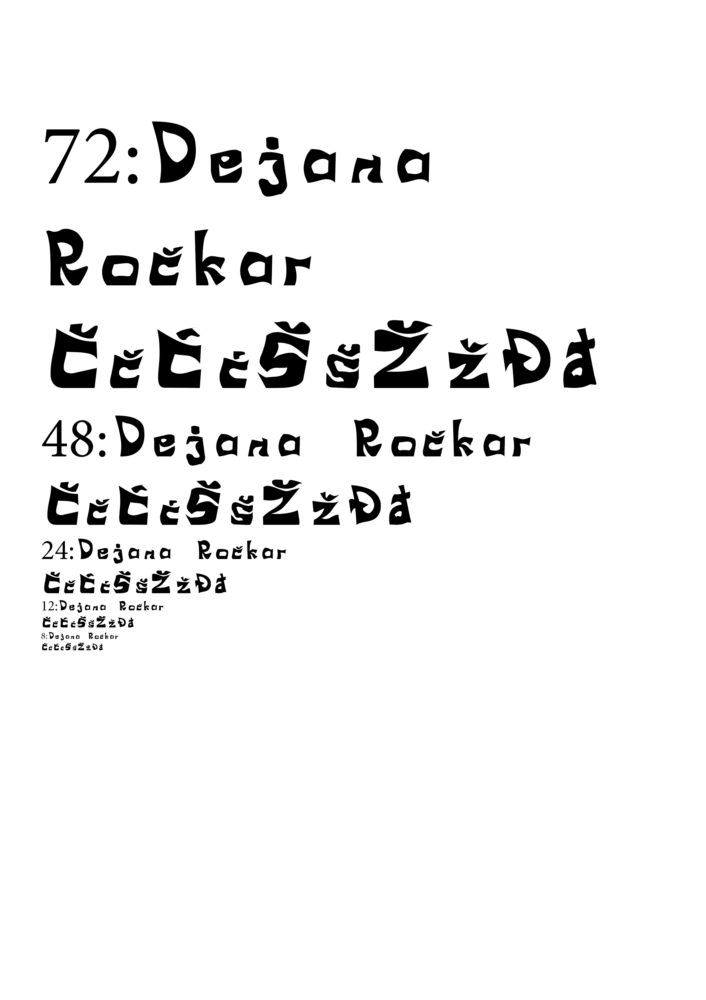
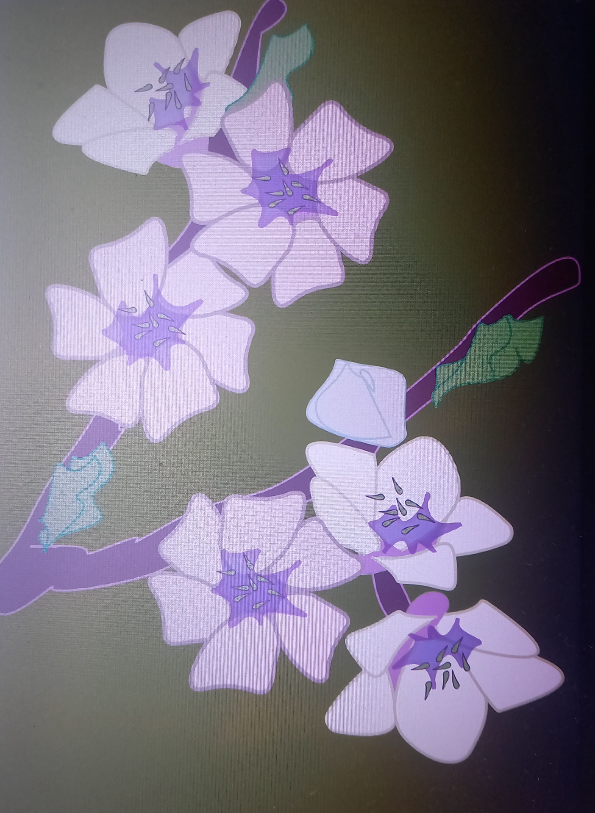
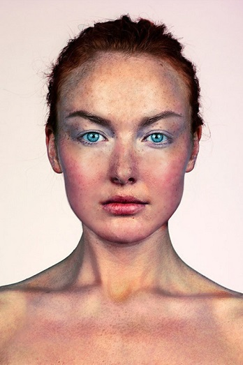
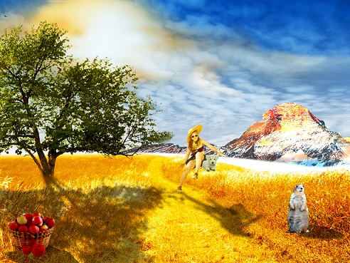
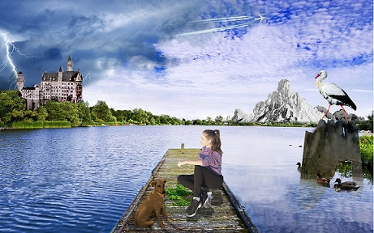

Vježba 1
Izrada fonta u programu FontForge.
Vježba 2
Koristeći vlastiti font s prošle vježbe preko krivulja smo ispisali tekst i od njega napravili masku.

Vježba 3
Zadatak je izvesti vlastiti primjer sa multipliciranim objektima nacrtanima sa alatom Pen u Ilusratoru.
Vježba 4
U vježbi se obrađuje tema izrade složenih objekata koji se sastoje od više staza metodama spajanja (Unite/Compound path) ili oduzimanja oblika (Difference/Subtract). Apliciranje različitih vrsta gradijenata (linearni, radijalni, mesh) od dvije ili više boja.

Projektni zadatak
KOLOKVIJ 1; projektni zadatak – vektorska grafika
.jpg)
Vježba 5
Adobe Photoshop: tehnike retuširanja fotografija.
Vježba 6
PHOTOSHOP: selekcije, maske, kanali boja, koloriranje.

Vježba 7
PHOTOSHOP: fotomontaža, selekcije, maske, korekcija boja.
Projektni zadatak
KOLOKVIJ 2; projektni zadatak – piksel grafika
Vježba 8
Vježba se bavi osnovama obrade video materijala i uvođenjem multimedije u video projekt. ZADATAK: Snimiti vlastiti kratki video (ili naći besplatni video isječak sa neke stock baze) te ga obraditi kao kinemagraf.

Vježba 9
ZADATAK: Izrežite clip1 i clip2, dodajte im barem tri nova efekta te jedan statični i jedan pomični tekst. Drugačiji zvuk.